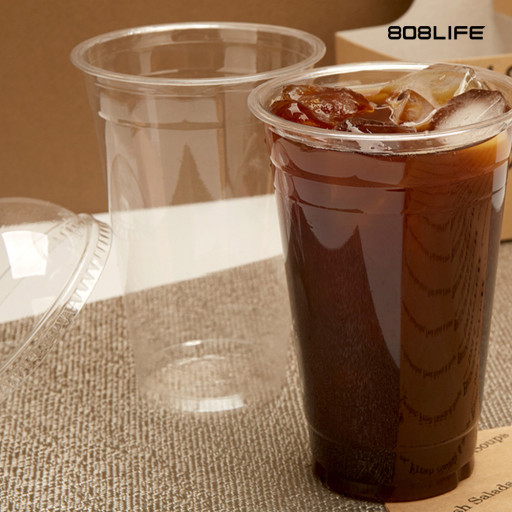
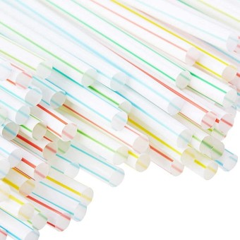
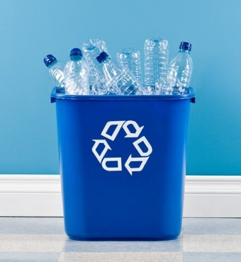
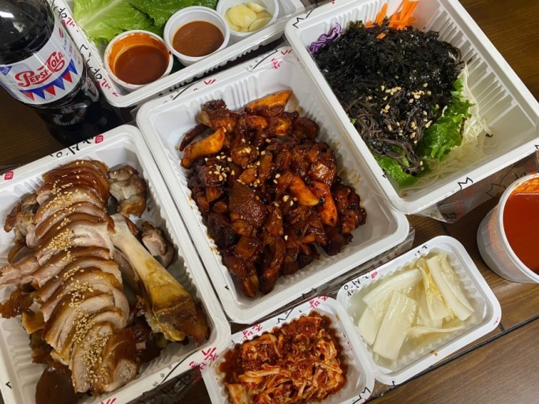
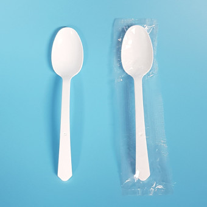

What we can do to reduce microplastics
플라스틱 사용 자가진단

일주일에 두번 이상 카페에서 테이크아웃 음료를 구매합니다

음료를 마실때마다 플라스틱 빨대를 이용합니다

일반 플라스틱과 투명페트병을 구분하여 재활용하지 않습니다

배달음식을 일주일에 2번 이상 시켜먹습니다.

배달음식을 시킬때 마다 일회용 수저 받기를 선택합니다
+Previous
+Next
3개이상 해당된다면 자신의 플라스틱 사용 습관을 되돌아볼 필요가 있습니다!
생활 속 미세플라스틱을 줄이는 방법
01
일회용 렌즈 올바르게 버리기
일회용 렌즈를 세면기, 변기 등에 버릴 경우 하수처리 시설에서 생분해가 되지 않아 결국 미세플라스틱으로 변하게 됩니다. 일회용 렌즈는 종량제 봉투에 담아 일반쓰레기로 버립시다.
02
마스크 올바르게 버리기
마스크 주재료인 부직포는 폴리프로필렌으로 제작되어 완전히 썩는데까지 약 450년이 걸립니다. 미세플라스틱 발생을 줄이기 위해서는 우선귀에 거는 줄 부분을 가위로 자르거나 손으로 뜯어 분리하고 겉면이 안으로 가게 접어서 끈으로 묶은 후 종량제 봉투에 담아 버려야 합니다.
03
의류 소재 확인후 오래 입을 수 있는 옷으로 구매하기
현재 제작되는 의류 중에는 아크릴과 나일론 등이 함유된 합성섬유 제품이 많습니다. 이러한 합성섬유에서 빠져나온 미세플라스틱은 착용 중 대기에 떠다니기도 하고 세탁 시 빠져나오기도 합니다. 이를 최대한 막기 위해서는 옷을 최대한 오래 입는 것이 좋습닏.ㅏ
04
제품 구매전 성분 확인하기
제품을 구매할때 성분표에 폴리에틸렌, 폴리프로필렌, 폴리에틸렌테레프타레이트, 아크릴레이트코폴리머, 부틸렌, 에틸렌, 스타이렌, 나일론 등이 함유되어 있다면 가급적 사용하지 않는 것이 좋습니다.
05
플라스틱 수세미 대신 천연수세미 이용하기
플라스틱 수세미를 사용하면 설거지를 하는 도중에 수세미가 마모되며 미세플라스틱이 발생합니다. 환경에도 좋고 건강에도 좋은 천연수세미로 바꿔보세요.
출처: 한국 지역난방공사 공식블로그 -미세플라스틱을 줄이는방법
더 다양한 정보를 얻고 싶다면
환경부 공식 홈페이지를 방문해보세요
SEE More